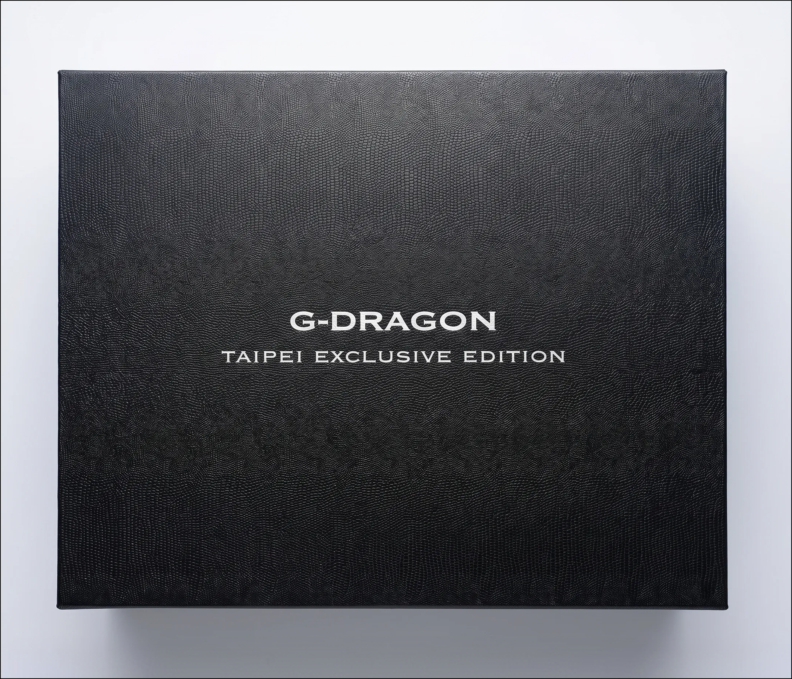
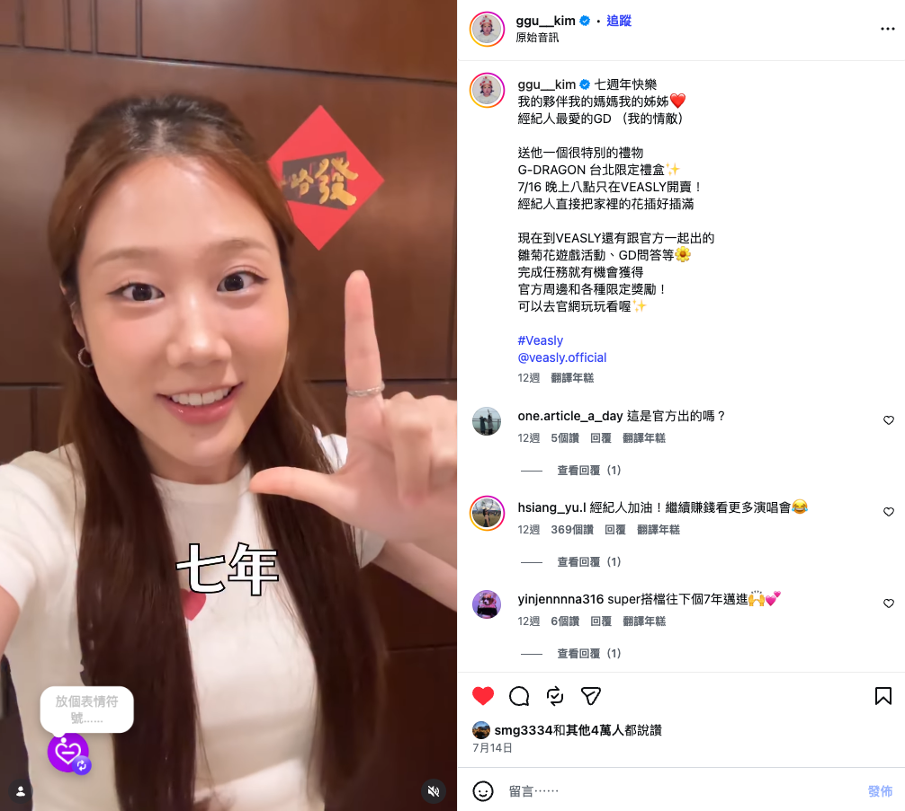

PROJECT 02 / BRANDING / CAMPAIGN
소장하는 굿즈에서, 전시하는 경험으로
G-DRAGON 대만 한정 세트 · VEASLY

예쁜 굿즈가 다시 상자에 들어가는 이유
GD 대만 한정 세트 프로젝트에서 팬의 니즈 파악, 패키지 콘셉트 제안, 사전 이벤트, 홍보 콘텐츠와 크리에이터 협업, 출시 후 고객 반응 조사까지 참여했습니다.
예쁜 굿즈를 구매해도 전시할 방법이 없어 다시 상자에 넣어두는 불편함을 팬으로서 경험했습니다. 개봉 이후에도 일상 공간에서 소장품을 즐길 방법이 필요했습니다.
소장 이후에도 감상하고 싶은 마음
팬이 원하는 것은 굿즈를 소장하는 일뿐 아니라, 개봉 후에도 일상 공간에서 감상하는 경험이었습니다. 팬으로서 겪은 보관·전시의 불편함에서 이 니즈를 발견했습니다.
포장에 전시의 역할을 더하다
G-DRAGON을 상징하는 데이지를 활용해, 패키지를 개봉 후 가든 전시대로 사용하는 콘셉트를 제안했습니다. 별도의 전시용품 없이도 소장품을 즐기는 사용 경험을 구매 이유로 연결하고자 했습니다.

출시 전후의 활동을 연결하다
데이지 가든 패키지 콘셉트를 제안하고, 출시 일정에 맞춰 이벤트·홍보 콘텐츠·인플루언서 협업을 연결했습니다. 촬영 가이드, 현지 표현 검수, 한국 팀과 대만 크리에이터 사이의 요구·일정 조율을 담당했습니다. 최종 디자인·제작 담당 범위는 [내용 추가 필요].
G-DRAGON의 데이지를 활용해 개봉 후 전시대로 사용하는 패키지를 제안했습니다. GD 관련 콘텐츠로 관심을 모은 뒤 상품 공개와 퀴즈·룰렛 이벤트로 연결하고, 출시 후 고객 의견에 따라 가치 설명과 메시지를 조정했습니다.
결과물과 소비자의 반응
패키지 사진과 이벤트 안내, 크리에이터 협업 게시물이 남아 있습니다. 대표 협업 캡처는 조회수 약 89.2만 회, 좋아요 약 4만 개, 댓글 66개를 보여줍니다. 판매·이벤트 참여·조사 결과는 [내용 추가 필요].
